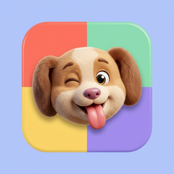
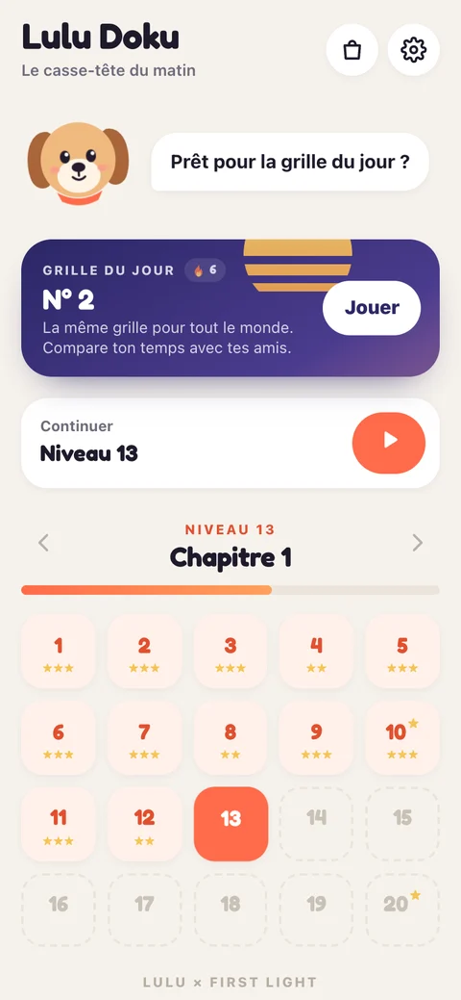
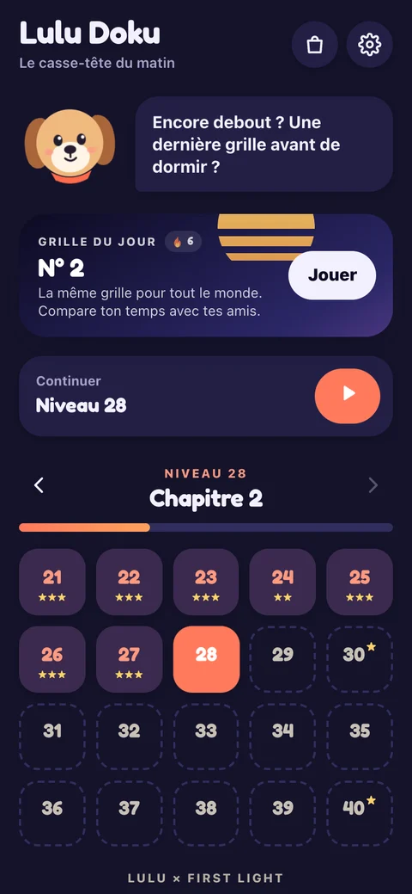
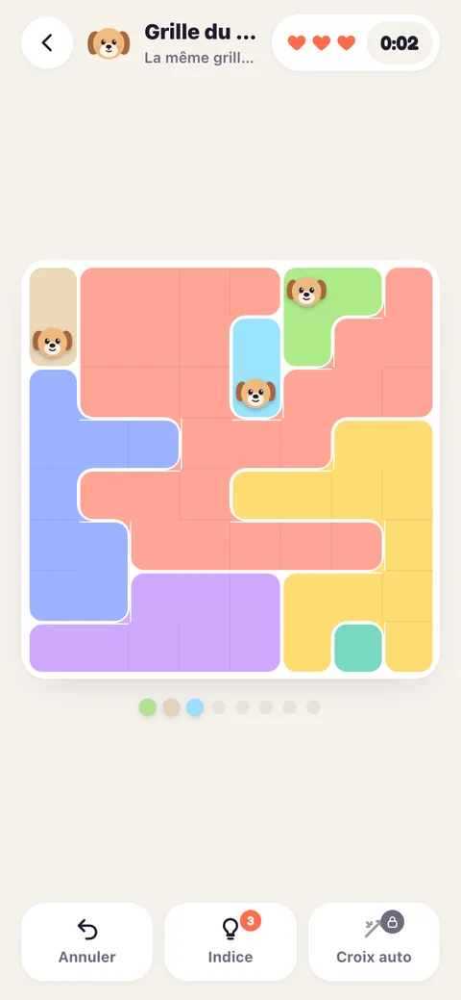
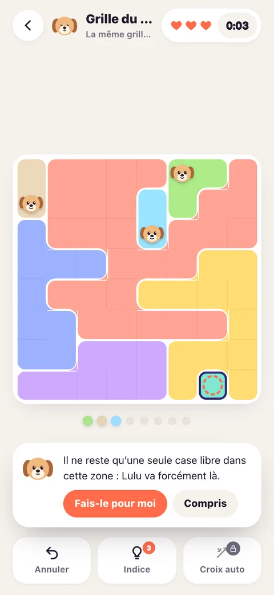
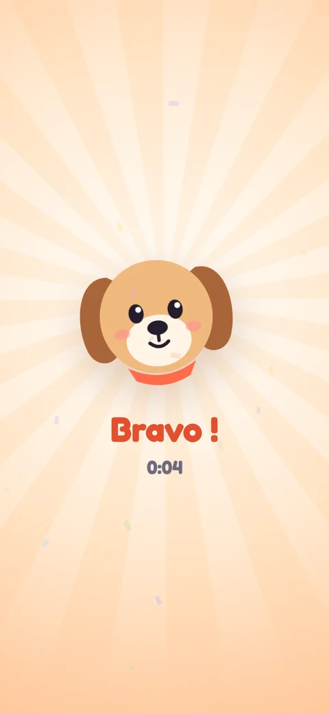

Un jeu Lulu × First LightLulu Doku
Le casse-tête du matin. Une grille de logique par jour, la même pour tout le monde, à résoudre avec Lulu en quelques minutes. Puis des chapitres sans fin, pour le plaisir.
- 1Une Lulu par ligne et par colonne.
- 2Une Lulu par zone de couleur.
- 3Deux Lulu ne se touchent jamais, même en diagonale.
Tu as tout compris. Dans l'app, une nouvelle grille t'attend chaque matin à 6 h.
Cinq minutes de logique, un vrai moment à soi
La grille du matin
Chaque jour à 6 h, une nouvelle grille, la même pour tout le monde. Un peu plus corsée le week-end. Enchaînez les jours pour faire grandir votre série.
Lulu vous explique
Bloqué ? Lulu vous montre la prochaine déduction et vous explique pourquoi. Jamais besoin de deviner : chaque grille se résout par la logique.
Des chapitres sans fin
Des grilles de 5 × 5 à 9 × 9, vingt par chapitre, avec des respirations plus faciles et un défi de Lulu tous les dix niveaux.
Défiez vos amis
Partagez votre temps et une jolie carte de résultat. Vos amis font la même grille du matin : le plus rapide gagne.
De jour comme de nuit
Clair et doré le matin, bleu nuit le soir, ou le thème que vous préférez. Trois palettes de couleurs et un mode pour les daltoniens.
Gratuit, pour de vrai
Tout le jeu est gratuit. Quelques pubs entre les parties, qu'un achat unique retire pour toujours. Aucun abonnement.
Partagez votre temps, sans rien dévoiler
Votre résultat se partage en couleurs, comme un petit tableau : vos amis voient votre temps et la forme de la grille, jamais la solution.


Une grille, Lulu, et rien qui ne vous presse



Comment jouer
Touchez une case pour y mettre une croix (ou l'effacer), touchez-la deux fois pour y poser Lulu. Chaque ligne, chaque colonne et chaque zone de couleur doit contenir une seule Lulu, et deux Lulu ne se touchent jamais, même en diagonale. Bloqué ? Lulu vous donne un indice et vous explique son raisonnement.
Achats
Le jeu est gratuit. Dans la boutique (la sacoche en haut de l'accueil), « Sans pub » retire les pubs entre les parties, « Croix automatiques » barre pour vous les cases éliminées. Vous avez changé de téléphone ? Touchez « Restaurer mes achats » dans la boutique.
Une question ?
Écrivez-nous à moonbeamstudio.contact@gmail.com, nous répondons à chaque message.
Confidentialité
Dernière mise à jour : 15 octobre 2026.
Vos parties sont enregistrées uniquement sur votre iPhone. Nous n'avons pas de serveur de jeu et ne demandons ni compte, ni nom, ni e-mail. Le prénom que vous pouvez saisir pour signer un défi reste sur votre appareil et n'apparaît que dans les messages que vous choisissez de partager.
Achats. Les paiements sont traités par Apple : nous ne voyons jamais vos informations bancaires. Pour vérifier et restaurer vos achats, nous utilisons RevenueCat, qui reçoit un identifiant anonyme et la liste des produits achetés (politique de RevenueCat).
Publicités. Le jeu affiche des publicités fournies par Google AdMob : une entre certaines parties, et d'autres seulement quand vous choisissez d'en regarder une contre une récompense. Avec votre accord (formulaire affiché au premier lancement en Europe, et autorisation de suivi d'iOS), AdMob peut utiliser l'identifiant publicitaire de l'appareil pour des publicités personnalisées ; sinon, elles sont non personnalisées. AdMob collecte aussi des données techniques et de diagnostic. Vous pouvez changer d'avis à tout moment dans les réglages du jeu (« Choix de confidentialité ») ou de l'iPhone (politique de Google). L'achat « Sans pub » retire les publicités entre les parties.
Vos droits. Pour toute demande (accès, effacement), écrivez-nous à l'adresse ci-dessus. Supprimer l'app efface toutes vos données de jeu.
Privacy (English)
Your games are saved only on your iPhone: no account, no game server, no name or e-mail collected. Payments are handled by Apple; RevenueCat receives an anonymous identifier and the list of purchased products to verify and restore purchases. Ads are provided by Google AdMob (one between some games, others only when you choose to watch one for a reward). With your consent (form shown at first launch in Europe, and iOS tracking permission), AdMob may use the device advertising identifier for personalised ads; otherwise ads are non-personalised. You can change your choice anytime in the game settings ("Privacy choices") or in iOS settings. Contact: moonbeamstudio.contact@gmail.com.